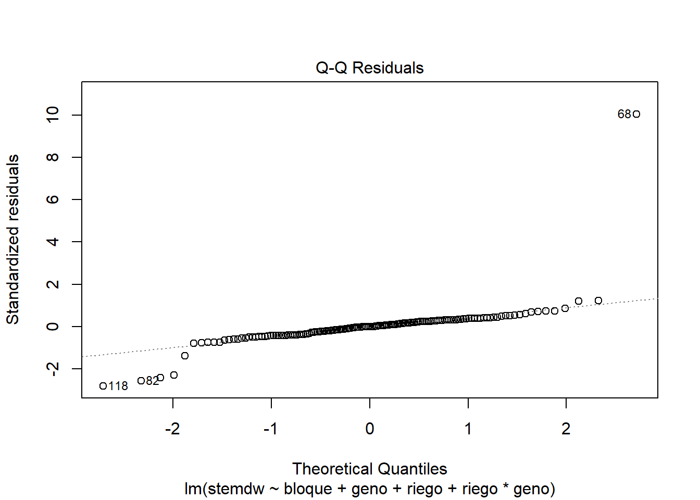
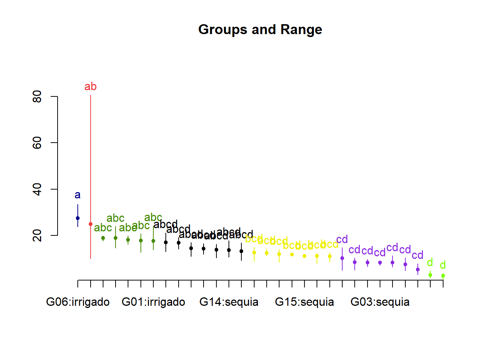
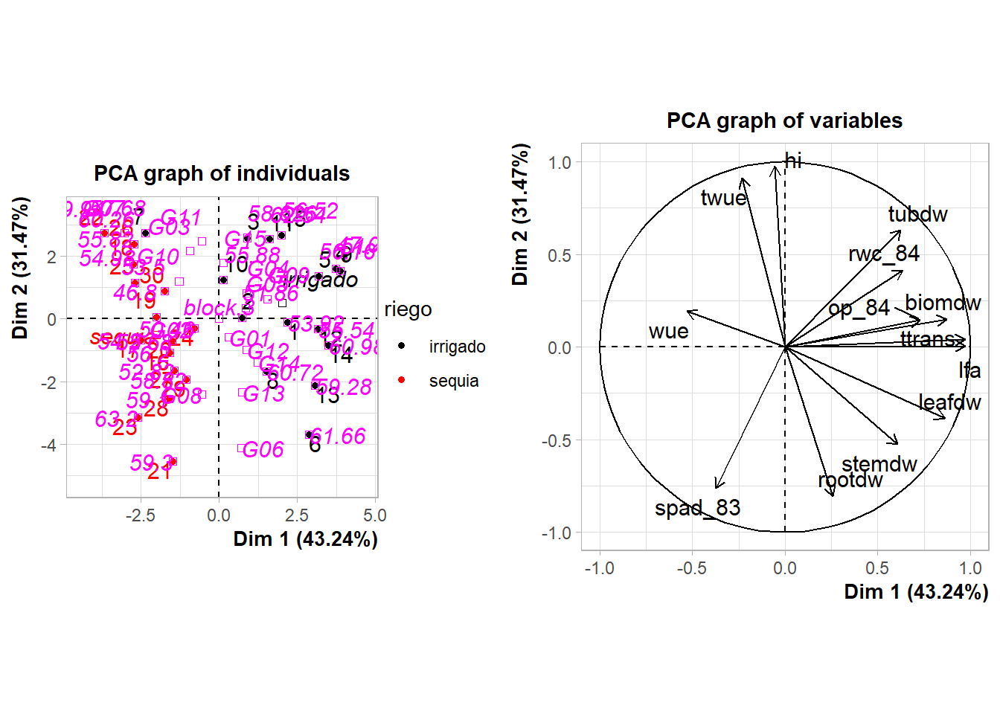

1 + 1[1] 2Quarto enables you to weave together content and executable code into a finished document. To learn more about Quarto see https://quarto.org.
When you click the Render button a document will be generated that includes both content and the output of embedded code. You can embed code like this:
1 + 1[1] 2You can add options to executable code like this
[1] 4The echo: false option disables the printing of code (only output is displayed). # Modelos lineales mixtos
source('https://inkaverse.com/setup.r')ℹ Suitable tokens found in the cache, associated with these emails:• '7153463821@untrm.edu.pe'• 'castrocamangiancarlogiancarlo@gmail.com' Defaulting to the first email.! Using an auto-discovered, cached token. To suppress this message, modify your code or options to clearly consent to
the use of a cached token. See gargle's "Non-interactive auth" vignette for more details: <https://gargle.r-lib.org/articles/non-interactive-auth.html>ℹ The googlesheets4 package is using a cached token for
'7153463821@untrm.edu.pe'.ℹ Suitable tokens found in the cache, associated with these emails:• '7153463821@untrm.edu.pe'• 'castrocamangiancarlogiancarlo@gmail.com' Defaulting to the first email.! Using an auto-discovered, cached token. To suppress this message, modify your code or options to clearly consent to
the use of a cached token. See gargle's "Non-interactive auth" vignette for more details: <https://gargle.r-lib.org/articles/non-interactive-auth.html>ℹ The googledrive package is using a cached token for
'7153463821@untrm.edu.pe'.library(openxlsx)
data_de_tesis_prof <- openxlsx::read.xlsx("LA MOLINA 2014 POTATO WUE (FB).xlsx",sheet="fb")modelo <- lm(formula = stemdw ~ bloque + geno + riego + riego*geno, data = data_de_tesis_prof)
anova(modelo)
## Analysis of Variance Table
##
## Response: stemdw
## Df Sum Sq Mean Sq F value Pr(>F)
## bloque 4 229.8 57.44 1.5686 0.187325
## geno 14 3623.1 258.79 7.0667 0.0000000002354 ***
## riego 1 330.5 330.52 9.0252 0.003263 **
## geno:riego 14 732.0 52.29 1.4277 0.151200
## Residuals 116 4248.1 36.62
## ---
## Signif. codes: 0 '***' 0.001 '**' 0.01 '*' 0.05 '.' 0.1 ' ' 1
plot(modelo)

ggplot(data_de_tesis_prof, aes(x = geno, y = stemdw, colour =riego)) +
geom_boxplot(outlier.colour = "red", outlier.shape = 16, outlier.size = 2) +
labs(title = "Boxplot con interacción de niveles de riego y genotipo",
x = "Interacción Riego y Genotipo",
y = "Peso seco del tallo (g)") +
theme_minimal() +
theme(axis.text.x = element_text(angle = 45, hjust = 1)) # inclinar etiquetas del eje xmodelo <- aov(formula = block + rootdw ~ riego + geno + riego*geno
, data = data_de_tesis_prof)
anova(modelo)
## Analysis of Variance Table
##
## Response: block + rootdw
## Df Sum Sq Mean Sq F value Pr(>F)
## riego 1 1.12 1.120 0.3512 0.5545
## geno 14 456.29 32.592 10.2226 0.000000000000008921 ***
## riego:geno 14 7.79 0.556 0.1745 0.9996
## Residuals 120 382.59 3.188
## ---
## Signif. codes: 0 '***' 0.001 '**' 0.01 '*' 0.05 '.' 0.1 ' ' 1
plot(modelo)

ggplot(data_de_tesis_prof, aes(x = geno, y = rootdw, colour =riego)) +
geom_boxplot(outlier.colour = "red", outlier.shape = 16, outlier.size = 2) +
labs(title = "Boxplot con interacción de niveles de riego y genotipo",
x = "Interacción Riego y Genotipo",
y = "Peso seco de la raiz (g)") +
theme_minimal() +
theme(axis.text.x = element_text(angle = 45, hjust = 1)) # inclinar etiquetas del eje xlibrary(lme4)
library(lmerTest)
model <- lme4::lmer(stemdw ~ riego + geno + riego*geno +
(1|bloque), data = data_de_tesis_prof)
anova(model)
## Analysis of Variance Table
## npar Sum Sq Mean Sq F value
## riego 1 330.5 330.52 9.0252
## geno 14 3623.1 258.79 7.0667
## riego:geno 14 732.0 52.29 1.4277
plot(modelo)

ol <- boxplot(stemdw ~ riego*geno,data_de_tesis_prof)ol
## $stats
## [,1] [,2] [,3] [,4] [,5] [,6] [,7] [,8] [,9] [,10] [,11] [,12]
## [1,] 13.80 10.44 12.12 8.39 10.76 8.33 17.46 12.53 12.03 11.14 23.77 16.22
## [2,] 15.32 11.97 12.12 8.39 10.76 8.33 17.46 12.53 13.07 11.14 24.35 16.22
## [3,] 16.97 14.87 12.14 8.46 11.18 8.37 18.84 12.56 14.55 11.52 26.46 17.45
## [4,] 18.13 15.37 12.58 8.63 12.20 8.73 19.29 13.73 15.19 11.65 29.49 17.45
## [5,] 18.13 16.26 12.58 8.63 12.63 9.03 20.75 15.02 16.57 11.65 33.52 17.45
## [,13] [,14] [,15] [,16] [,17] [,18] [,19] [,20] [,21] [,22] [,23] [,24]
## [1,] 1.71 2.71 11.18 8.17 14.22 10.97 5.03 6.36 7.27 3.11 17.61 12.30
## [2,] 1.71 2.71 11.61 8.17 16.05 13.36 8.20 6.58 7.27 3.95 17.81 12.30
## [3,] 2.48 2.97 12.48 8.44 16.96 14.02 11.19 7.44 7.53 5.56 19.60 13.91
## [4,] 4.06 3.09 12.52 10.10 18.17 16.71 11.74 9.84 7.99 5.72 19.78 14.22
## [5,] 4.78 3.09 12.52 10.31 19.20 17.02 14.77 11.27 7.99 7.90 19.87 16.82
## [,25] [,26] [,27] [,28] [,29] [,30]
## [1,] 16.27 11.52 17.86 12.94 11.76 10.32
## [2,] 17.36 11.52 17.86 12.94 11.76 10.95
## [3,] 18.16 11.82 17.89 13.37 11.78 11.19
## [4,] 18.97 12.23 19.93 13.97 12.13 11.43
## [5,] 19.83 12.34 19.93 13.97 12.14 11.82
##
## $n
## [1] 5 5 5 5 5 5 5 5 5 5 5 5 5 5 5 5 5 5 5 5 5 5 5 5 5 5 5 5 5 5
##
## $conf
## [,1] [,2] [,3] [,4] [,5] [,6] [,7] [,8]
## [1,] 14.98446 12.46757 11.81497 8.290417 10.1625 8.087361 17.54693 11.71208
## [2,] 18.95554 17.27243 12.46503 8.629583 12.1975 8.652639 20.13307 13.40792
## [,9] [,10] [,11] [,12] [,13] [,14] [,15] [,16]
## [1,] 13.05201 11.15964 22.82809 16.58089 0.8194959 2.701493 11.837 7.076267
## [2,] 16.04799 11.88036 30.09191 18.31911 4.1405041 3.238507 13.123 9.803733
## [,17] [,18] [,19] [,20] [,21] [,22] [,23] [,24]
## [1,] 15.46201 11.6529 8.688645 5.136492 7.02125 4.309322 18.208 12.55333
## [2,] 18.45799 16.3871 13.691355 9.743508 8.03875 6.810678 20.992 15.26667
## [,25] [,26] [,27] [,28] [,29] [,30]
## [1,] 17.02238 11.31832 16.42734 12.6422 11.51856 10.85083
## [2,] 19.29762 12.32168 19.35266 14.0978 12.04144 11.52917
##
## $out
## [1] 24.19 14.01 8.54 6.58 9.76 8.56 7.16 12.80 8.79 80.65 10.02 21.19
## [13] 13.12 3.70 0.97 14.28 5.14 4.90 10.32 9.19 7.79 14.57 23.96 17.86
## [25] 10.62 11.17
##
## $group
## [1] 1 3 3 4 4 5 6 7 8 10 10 12 12 14 14 15 16 21 21 24 26 27 27 28 28
## [26] 29
##
## $names
## [1] "irrigado.G01" "sequia.G01" "irrigado.G02" "sequia.G02" "irrigado.G03"
## [6] "sequia.G03" "irrigado.G04" "sequia.G04" "irrigado.G05" "sequia.G05"
## [11] "irrigado.G06" "sequia.G06" "irrigado.G07" "sequia.G07" "irrigado.G08"
## [16] "sequia.G08" "irrigado.G09" "sequia.G09" "irrigado.G10" "sequia.G10"
## [21] "irrigado.G11" "sequia.G11" "irrigado.G12" "sequia.G12" "irrigado.G13"
## [26] "sequia.G13" "irrigado.G14" "sequia.G14" "irrigado.G15" "sequia.G15"library(inti)
model <- remove_outliers(data = data_de_tesis_prof
, formula = stemdw ~ riego + geno + riego*geno + (1|bloque)
, plot_diag = T
)
model
## $data
## $data$raw
## index riego geno bloque stemdw
## 1 1 sequia G01 II 14.87
## 2 2 sequia G02 IV 8.63
## 3 3 irrigado G01 III 24.19
## 4 4 sequia G02 I 6.58
## 5 5 irrigado G03 II 12.63
## 6 6 irrigado G04 V 17.46
## 7 7 irrigado G01 I 15.32
## 8 8 irrigado G05 IV 14.55
## 9 9 sequia G06 II 21.19
## 10 10 sequia G05 I 11.14
## 11 11 irrigado G01 II 18.13
## 12 12 sequia G07 II 3.70
## 13 13 irrigado G08 II 12.48
## 14 14 irrigado G06 III 29.49
## 15 15 irrigado G09 III 16.96
## 16 16 irrigado G10 II 8.20
## 17 17 sequia G11 I 7.90
## 18 18 sequia G12 III 9.19
## 19 19 irrigado G07 I 2.48
## 20 20 irrigado G04 II 20.75
## 21 21 irrigado G13 II 18.97
## 22 22 irrigado G14 III 14.57
## 23 23 irrigado G04 IV 18.84
## 24 24 sequia G04 V 8.79
## 25 25 sequia G08 V 8.17
## 26 26 sequia G04 III 12.53
## 27 27 sequia G01 IV 16.26
## 28 28 irrigado G10 I 11.19
## 29 29 irrigado G08 V 11.18
## 30 30 irrigado G02 V 12.14
## 31 31 irrigado G07 III 4.78
## 32 32 irrigado G08 I 12.52
## 33 33 irrigado G14 V 23.96
## 34 34 irrigado G03 I 11.18
## 35 35 sequia G13 III 7.79
## 36 36 sequia G01 V 11.97
## 37 37 sequia G03 I 9.03
## 38 38 irrigado G15 III 11.17
## 39 39 irrigado G03 IV 12.20
## 40 40 irrigado G09 IV 18.17
## 41 41 irrigado G11 II 4.90
## 42 42 sequia G03 V 8.73
## 43 43 sequia G11 III 5.56
## 44 44 irrigado G06 V 23.77
## 45 45 sequia G05 V 11.52
## 46 46 sequia G08 IV 8.44
## 47 47 irrigado G11 IV 7.53
## 48 48 sequia G11 II 3.11
## 49 49 irrigado G10 III 14.77
## 50 50 sequia G06 IV 17.45
## 51 51 sequia G09 I 13.36
## 52 52 irrigado G11 I 7.27
## 53 53 sequia G11 IV 5.72
## 54 54 irrigado G15 IV 11.76
## 55 55 irrigado G13 IV 19.83
## 56 56 sequia G14 V 12.94
## 57 57 irrigado G02 IV 14.01
## 58 58 irrigado G09 II 19.20
## 59 59 irrigado G02 III 12.12
## 60 60 sequia G08 III 10.10
## 61 61 irrigado G06 II 24.35
## 62 62 sequia G13 IV 11.52
## 63 63 sequia G14 III 13.37
## 64 64 sequia G04 II 15.02
## 65 65 irrigado G11 III 10.32
## 66 66 irrigado G07 II 1.71
## 67 67 irrigado G08 IV 14.28
## 68 68 sequia G05 IV 80.65
## 69 69 irrigado G04 I 12.80
## 70 70 irrigado G11 V 7.99
## 71 71 irrigado G12 I 19.60
## 72 72 sequia G14 IV 13.97
## 73 73 sequia G07 III 3.09
## 74 74 irrigado G03 III 8.56
## 75 75 sequia G01 I 10.44
## 76 76 sequia G04 I 13.73
## 77 77 sequia G03 II 8.33
## 78 78 irrigado G15 II 11.78
## 79 79 sequia G12 IV 12.30
## 80 80 sequia G12 I 13.91
## 81 81 sequia G08 I 5.14
## 82 82 sequia G05 II 11.65
## 83 83 sequia G02 II 8.46
## 84 84 sequia G10 I 9.84
## 85 85 sequia G15 I 11.43
## 86 86 irrigado G07 V 1.71
## 87 87 sequia G10 V 6.36
## 88 88 sequia G13 II 12.34
## 89 89 sequia G07 V 2.71
## 90 90 sequia G03 III 7.16
## 91 91 sequia G15 IV 11.19
## 92 92 sequia G13 I 12.23
## 93 93 sequia G03 IV 8.37
## 94 94 irrigado G10 V 11.74
## 95 95 sequia G13 V 11.82
## 96 96 sequia G09 II 17.02
## 97 97 irrigado G14 IV 17.89
## 98 98 irrigado G01 V 13.80
## 99 99 sequia G01 III 15.37
## 100 100 irrigado G06 IV 33.52
## 101 101 sequia G04 IV 12.56
## 102 102 irrigado G15 V 12.13
## 103 103 irrigado G13 III 17.36
## 104 104 irrigado G02 II 12.58
## 105 105 sequia G08 II 10.31
## 106 106 irrigado G04 III 19.29
## 107 107 sequia G02 V 8.39
## 108 108 sequia G06 V 13.12
## 109 109 irrigado G15 I 12.14
## 110 110 irrigado G13 V 18.16
## 111 111 irrigado G05 V 12.03
## 112 112 sequia G09 III 16.71
## 113 113 sequia G09 V 10.97
## 114 114 sequia G10 II 7.44
## 115 115 irrigado G07 IV 4.06
## 116 116 irrigado G05 I 13.07
## 117 117 irrigado G02 I 8.54
## 118 118 sequia G05 III 10.02
## 119 119 irrigado G12 II 17.81
## 120 120 sequia G15 III 10.95
## 121 121 irrigado G13 I 16.27
## 122 122 sequia G14 II 17.86
## 123 123 sequia G12 II 16.82
## 124 124 sequia G15 II 11.82
## 125 125 irrigado G09 V 14.22
## 126 126 sequia G06 I 16.22
## 127 127 sequia G09 IV 14.02
## 128 128 sequia G15 V 10.32
## 129 129 irrigado G14 I 19.93
## 130 130 sequia G06 III 17.45
## 131 131 irrigado G01 IV 16.97
## 132 132 irrigado G12 III 19.78
## 133 133 sequia G12 V 14.22
## 134 134 irrigado G12 V 17.61
## 135 135 sequia G11 V 3.95
## 136 136 irrigado G12 IV 19.87
## 137 137 irrigado G09 I 16.05
## 138 138 sequia G02 III 9.76
## 139 139 sequia G07 I 2.97
## 140 140 irrigado G08 III 11.61
## 141 141 irrigado G06 I 26.46
## 142 142 irrigado G10 IV 5.03
## 143 143 irrigado G03 V 10.76
## 144 144 sequia G07 IV 0.97
## 145 145 irrigado G05 III 15.19
## 146 146 sequia G14 I 10.62
## 147 147 sequia G10 III 11.27
## 148 148 irrigado G14 II 17.86
## 149 149 irrigado G05 II 16.57
## 150 150 sequia G10 IV 6.58
##
## $data$clean
## index riego geno bloque stemdw
## 1 1 sequia G01 II 14.87
## 2 2 sequia G02 IV 8.63
## 3 3 irrigado G01 III NA
## 4 4 sequia G02 I 6.58
## 5 5 irrigado G03 II 12.63
## 6 6 irrigado G04 V 17.46
## 7 7 irrigado G01 I 15.32
## 8 8 irrigado G05 IV 14.55
## 9 9 sequia G06 II 21.19
## 10 10 sequia G05 I NA
## 11 11 irrigado G01 II 18.13
## 12 12 sequia G07 II 3.70
## 13 13 irrigado G08 II 12.48
## 14 14 irrigado G06 III 29.49
## 15 15 irrigado G09 III 16.96
## 16 16 irrigado G10 II 8.20
## 17 17 sequia G11 I 7.90
## 18 18 sequia G12 III 9.19
## 19 19 irrigado G07 I 2.48
## 20 20 irrigado G04 II 20.75
## 21 21 irrigado G13 II 18.97
## 22 22 irrigado G14 III 14.57
## 23 23 irrigado G04 IV 18.84
## 24 24 sequia G04 V 8.79
## 25 25 sequia G08 V 8.17
## 26 26 sequia G04 III 12.53
## 27 27 sequia G01 IV 16.26
## 28 28 irrigado G10 I 11.19
## 29 29 irrigado G08 V 11.18
## 30 30 irrigado G02 V 12.14
## 31 31 irrigado G07 III 4.78
## 32 32 irrigado G08 I 12.52
## 33 33 irrigado G14 V 23.96
## 34 34 irrigado G03 I 11.18
## 35 35 sequia G13 III 7.79
## 36 36 sequia G01 V 11.97
## 37 37 sequia G03 I 9.03
## 38 38 irrigado G15 III 11.17
## 39 39 irrigado G03 IV 12.20
## 40 40 irrigado G09 IV 18.17
## 41 41 irrigado G11 II 4.90
## 42 42 sequia G03 V 8.73
## 43 43 sequia G11 III 5.56
## 44 44 irrigado G06 V 23.77
## 45 45 sequia G05 V NA
## 46 46 sequia G08 IV 8.44
## 47 47 irrigado G11 IV 7.53
## 48 48 sequia G11 II 3.11
## 49 49 irrigado G10 III 14.77
## 50 50 sequia G06 IV 17.45
## 51 51 sequia G09 I 13.36
## 52 52 irrigado G11 I 7.27
## 53 53 sequia G11 IV 5.72
## 54 54 irrigado G15 IV 11.76
## 55 55 irrigado G13 IV 19.83
## 56 56 sequia G14 V 12.94
## 57 57 irrigado G02 IV 14.01
## 58 58 irrigado G09 II 19.20
## 59 59 irrigado G02 III 12.12
## 60 60 sequia G08 III 10.10
## 61 61 irrigado G06 II 24.35
## 62 62 sequia G13 IV 11.52
## 63 63 sequia G14 III 13.37
## 64 64 sequia G04 II 15.02
## 65 65 irrigado G11 III 10.32
## 66 66 irrigado G07 II 1.71
## 67 67 irrigado G08 IV 14.28
## 68 68 sequia G05 IV NA
## 69 69 irrigado G04 I 12.80
## 70 70 irrigado G11 V 7.99
## 71 71 irrigado G12 I 19.60
## 72 72 sequia G14 IV 13.97
## 73 73 sequia G07 III 3.09
## 74 74 irrigado G03 III 8.56
## 75 75 sequia G01 I 10.44
## 76 76 sequia G04 I 13.73
## 77 77 sequia G03 II 8.33
## 78 78 irrigado G15 II 11.78
## 79 79 sequia G12 IV 12.30
## 80 80 sequia G12 I 13.91
## 81 81 sequia G08 I 5.14
## 82 82 sequia G05 II NA
## 83 83 sequia G02 II 8.46
## 84 84 sequia G10 I 9.84
## 85 85 sequia G15 I 11.43
## 86 86 irrigado G07 V 1.71
## 87 87 sequia G10 V 6.36
## 88 88 sequia G13 II 12.34
## 89 89 sequia G07 V 2.71
## 90 90 sequia G03 III 7.16
## 91 91 sequia G15 IV 11.19
## 92 92 sequia G13 I 12.23
## 93 93 sequia G03 IV 8.37
## 94 94 irrigado G10 V 11.74
## 95 95 sequia G13 V 11.82
## 96 96 sequia G09 II 17.02
## 97 97 irrigado G14 IV 17.89
## 98 98 irrigado G01 V 13.80
## 99 99 sequia G01 III 15.37
## 100 100 irrigado G06 IV 33.52
## 101 101 sequia G04 IV 12.56
## 102 102 irrigado G15 V 12.13
## 103 103 irrigado G13 III 17.36
## 104 104 irrigado G02 II 12.58
## 105 105 sequia G08 II 10.31
## 106 106 irrigado G04 III 19.29
## 107 107 sequia G02 V 8.39
## 108 108 sequia G06 V 13.12
## 109 109 irrigado G15 I 12.14
## 110 110 irrigado G13 V 18.16
## 111 111 irrigado G05 V 12.03
## 112 112 sequia G09 III 16.71
## 113 113 sequia G09 V 10.97
## 114 114 sequia G10 II 7.44
## 115 115 irrigado G07 IV 4.06
## 116 116 irrigado G05 I 13.07
## 117 117 irrigado G02 I 8.54
## 118 118 sequia G05 III NA
## 119 119 irrigado G12 II 17.81
## 120 120 sequia G15 III 10.95
## 121 121 irrigado G13 I 16.27
## 122 122 sequia G14 II 17.86
## 123 123 sequia G12 II 16.82
## 124 124 sequia G15 II 11.82
## 125 125 irrigado G09 V 14.22
## 126 126 sequia G06 I 16.22
## 127 127 sequia G09 IV 14.02
## 128 128 sequia G15 V 10.32
## 129 129 irrigado G14 I 19.93
## 130 130 sequia G06 III 17.45
## 131 131 irrigado G01 IV 16.97
## 132 132 irrigado G12 III 19.78
## 133 133 sequia G12 V 14.22
## 134 134 irrigado G12 V 17.61
## 135 135 sequia G11 V 3.95
## 136 136 irrigado G12 IV 19.87
## 137 137 irrigado G09 I 16.05
## 138 138 sequia G02 III 9.76
## 139 139 sequia G07 I 2.97
## 140 140 irrigado G08 III 11.61
## 141 141 irrigado G06 I 26.46
## 142 142 irrigado G10 IV NA
## 143 143 irrigado G03 V 10.76
## 144 144 sequia G07 IV 0.97
## 145 145 irrigado G05 III 15.19
## 146 146 sequia G14 I 10.62
## 147 147 sequia G10 III 11.27
## 148 148 irrigado G14 II 17.86
## 149 149 irrigado G05 II 16.57
## 150 150 sequia G10 IV 6.58
##
##
## $outliers
## index riego geno bloque stemdw resi res_MAD
## 3 3 irrigado G01 III 24.19 6.520276 4.031041
## 10 10 sequia G05 I 11.14 -13.467719 -8.326170
## 45 45 sequia G05 V 11.52 -13.006525 -8.041046
## 68 68 sequia G05 IV 80.65 54.860861 33.916722
## 82 82 sequia G05 II 11.65 -13.422893 -8.298457
## 118 118 sequia G05 III 10.02 -14.963724 -9.251048
## 142 142 irrigado G10 IV 5.03 -5.949139 -3.677946
## rawp.BHStud adjp bholm
## 3 0.0000555303522862260479 0.0000555303522862260479 0.008051901081502777
## 10 0.0000000000000000000000 0.0000000000000000000000 0.000000000000000000
## 45 0.0000000000000008881784 0.0000000000000008881784 0.000000000000129674
## 68 0.0000000000000000000000 0.0000000000000000000000 0.000000000000000000
## 82 0.0000000000000000000000 0.0000000000000000000000 0.000000000000000000
## 118 0.0000000000000000000000 0.0000000000000000000000 0.000000000000000000
## 142 0.0002351194758833941023 0.0002351194758833941023 0.033857204527208751
## out_flag
## 3 OUTLIER
## 10 OUTLIER
## 45 OUTLIER
## 68 OUTLIER
## 82 OUTLIER
## 118 OUTLIER
## 142 OUTLIER
##
## $diagplot##
## $model
## $model$raw
## Linear mixed model fit by REML ['lmerMod']
## Formula: stemdw ~ riego + geno + riego * geno + (1 | bloque)
## Data: rawdt
## REML criterion at convergence: 822.7055
## Random effects:
## Groups Name Std.Dev.
## bloque (Intercept) 0.8331
## Residual 6.0516
## Number of obs: 150, groups: bloque, 5
## Fixed Effects:
## (Intercept) riegosequia genoG02
## 17.682 -3.900 -5.804
## genoG03 genoG04 genoG05
## -6.616 0.146 -3.400
## genoG06 genoG07 genoG08
## 9.836 -14.734 -5.268
## genoG09 genoG10 genoG11
## -0.762 -7.496 -10.080
## genoG12 genoG13 genoG14
## 1.252 0.436 1.160
## genoG15 riegosequia:genoG02 riegosequia:genoG03
## -5.886 0.386 1.158
## riegosequia:genoG04 riegosequia:genoG05 riegosequia:genoG06
## -1.402 14.614 -6.532
## riegosequia:genoG07 riegosequia:genoG08 riegosequia:genoG09
## 3.640 -0.082 1.396
## riegosequia:genoG10 riegosequia:genoG11 riegosequia:genoG12
## 2.012 1.546 -1.746
## riegosequia:genoG13 riegosequia:genoG14 riegosequia:genoG15
## -3.078 -1.190 3.246
##
## $model$clean
## Linear mixed model fit by REML ['lmerMod']
## Formula: stemdw ~ riego + geno + riego * geno + (1 | bloque)
## Data: cleandt
## REML criterion at convergence: 537.8671
## Random effects:
## Groups Name Std.Dev.
## bloque (Intercept) 0.6007
## Residual 2.0454
## Number of obs: 143, groups: bloque, 5
## Fixed Effects:
## (Intercept) riegosequia genoG02
## 16.09325 -2.31125 -4.21525
## genoG03 genoG04 genoG05
## -5.02725 1.73475 -1.81125
## genoG06 genoG07 genoG08
## 11.42475 -13.14525 -3.67925
## genoG09 genoG10 genoG11
## 0.82675 -4.51258 -8.49125
## genoG12 genoG13 genoG14
## 2.84075 2.02475 2.74875
## genoG15 riegosequia:genoG02 riegosequia:genoG03
## -4.29725 -1.20275 -0.43075
## riegosequia:genoG04 riegosequia:genoG06 riegosequia:genoG07
## -2.99075 -8.12075 2.05125
## riegosequia:genoG08 riegosequia:genoG09 riegosequia:genoG10
## -1.67075 -0.19275 -0.97142
## riegosequia:genoG11 riegosequia:genoG12 riegosequia:genoG13
## -0.04275 -3.33475 -4.66675
## riegosequia:genoG14 riegosequia:genoG15
## -2.77875 1.65725
## fit warnings:
## fixed-effect model matrix is rank deficient so dropping 1 column / coefficientmodelo <- lm(formula = stemdw ~ bloque + riego + geno + riego*geno
, data = data_de_tesis_prof)
anova(modelo)
## Analysis of Variance Table
##
## Response: stemdw
## Df Sum Sq Mean Sq F value Pr(>F)
## bloque 4 229.8 57.44 1.5686 0.187325
## riego 1 330.5 330.52 9.0252 0.003263 **
## geno 14 3623.1 258.79 7.0667 0.0000000002354 ***
## riego:geno 14 732.0 52.29 1.4277 0.151200
## Residuals 116 4248.1 36.62
## ---
## Signif. codes: 0 '***' 0.001 '**' 0.01 '*' 0.05 '.' 0.1 ' ' 1
library(agricolae)
tukey_result <- HSD.test(modelo
, c("geno", "riego")
, group = TRUE)
tukey_result
## $statistics
## MSerror Df Mean CV MSD
## 36.62157 116 13.04987 46.3727 14.71758
##
## $parameters
## test name.t ntr StudentizedRange alpha
## Tukey geno:riego 30 5.438172 0.05
##
## $means
## stemdw std r se Min Max Q25 Q50 Q75
## G01:irrigado 17.682 3.9909485 5 2.706347 13.80 24.19 15.32 16.97 18.13
## G01:sequia 13.782 2.4646643 5 2.706347 10.44 16.26 11.97 14.87 15.37
## G02:irrigado 11.878 2.0191384 5 2.706347 8.54 14.01 12.12 12.14 12.58
## G02:sequia 8.364 1.1415034 5 2.706347 6.58 9.76 8.39 8.46 8.63
## G03:irrigado 11.066 1.5904968 5 2.706347 8.56 12.63 10.76 11.18 12.20
## G03:sequia 8.324 0.7106898 5 2.706347 7.16 9.03 8.33 8.37 8.73
## G04:irrigado 17.828 3.0461402 5 2.706347 12.80 20.75 17.46 18.84 19.29
## G04:sequia 12.526 2.3253236 5 2.706347 8.79 15.02 12.53 12.56 13.73
## G05:irrigado 14.282 1.7798652 5 2.706347 12.03 16.57 13.07 14.55 15.19
## G05:sequia 24.996 31.1181431 5 2.706347 10.02 80.65 11.14 11.52 11.65
## G06:irrigado 27.518 4.0347206 5 2.706347 23.77 33.52 24.35 26.46 29.49
## G06:sequia 17.086 2.8977112 5 2.706347 13.12 21.19 16.22 17.45 17.45
## G07:irrigado 2.948 1.4033068 5 2.706347 1.71 4.78 1.71 2.48 4.06
## G07:sequia 2.688 1.0268009 5 2.706347 0.97 3.70 2.71 2.97 3.09
## G08:irrigado 12.414 1.1902437 5 2.706347 11.18 14.28 11.61 12.48 12.52
## G08:sequia 8.432 2.0745530 5 2.706347 5.14 10.31 8.17 8.44 10.10
## G09:irrigado 16.920 1.9241492 5 2.706347 14.22 19.20 16.05 16.96 18.17
## G09:sequia 14.416 2.5094880 5 2.706347 10.97 17.02 13.36 14.02 16.71
## G10:irrigado 10.186 3.7069030 5 2.706347 5.03 14.77 8.20 11.19 11.74
## G10:sequia 8.298 2.1595185 5 2.706347 6.36 11.27 6.58 7.44 9.84
## G11:irrigado 7.602 1.9335382 5 2.706347 4.90 10.32 7.27 7.53 7.99
## G11:sequia 5.248 1.8445243 5 2.706347 3.11 7.90 3.95 5.56 5.72
## G12:irrigado 18.934 1.1238016 5 2.706347 17.61 19.87 17.81 19.60 19.78
## G12:sequia 13.288 2.8062555 5 2.706347 9.19 16.82 12.30 13.91 14.22
## G13:irrigado 18.118 1.3827762 5 2.706347 16.27 19.83 17.36 18.16 18.97
## G13:sequia 11.140 1.9011444 5 2.706347 7.79 12.34 11.52 11.82 12.23
## G14:irrigado 18.842 3.4459498 5 2.706347 14.57 23.96 17.86 17.89 19.93
## G14:sequia 13.752 2.6238274 5 2.706347 10.62 17.86 12.94 13.37 13.97
## G15:irrigado 11.796 0.3947531 5 2.706347 11.17 12.14 11.76 11.78 12.13
## G15:sequia 11.142 0.5606871 5 2.706347 10.32 11.82 10.95 11.19 11.43
##
## $comparison
## NULL
##
## $groups
## stemdw groups
## G06:irrigado 27.518 a
## G05:sequia 24.996 ab
## G12:irrigado 18.934 abc
## G14:irrigado 18.842 abc
## G13:irrigado 18.118 abc
## G04:irrigado 17.828 abc
## G01:irrigado 17.682 abc
## G06:sequia 17.086 abcd
## G09:irrigado 16.920 abcd
## G09:sequia 14.416 abcd
## G05:irrigado 14.282 abcd
## G01:sequia 13.782 abcd
## G14:sequia 13.752 abcd
## G12:sequia 13.288 abcd
## G04:sequia 12.526 bcd
## G08:irrigado 12.414 bcd
## G02:irrigado 11.878 bcd
## G15:irrigado 11.796 bcd
## G15:sequia 11.142 bcd
## G13:sequia 11.140 bcd
## G03:irrigado 11.066 bcd
## G10:irrigado 10.186 cd
## G08:sequia 8.432 cd
## G02:sequia 8.364 cd
## G03:sequia 8.324 cd
## G10:sequia 8.298 cd
## G11:irrigado 7.602 cd
## G11:sequia 5.248 cd
## G07:irrigado 2.948 d
## G07:sequia 2.688 d
##
## attr(,"class")
## [1] "group"
plot(tukey_result)
str(tukey_result)
## List of 5
## $ statistics:'data.frame': 1 obs. of 5 variables:
## ..$ MSerror: num 36.6
## ..$ Df : int 116
## ..$ Mean : num 13
## ..$ CV : num 46.4
## ..$ MSD : num 14.7
## $ parameters:'data.frame': 1 obs. of 5 variables:
## ..$ test : chr "Tukey"
## ..$ name.t : chr "geno:riego"
## ..$ ntr : int 30
## ..$ StudentizedRange: num 5.44
## ..$ alpha : num 0.05
## $ means :'data.frame': 30 obs. of 9 variables:
## ..$ stemdw: num [1:30] 17.68 13.78 11.88 8.36 11.07 ...
## ..$ std : num [1:30] 3.99 2.46 2.02 1.14 1.59 ...
## ..$ r : int [1:30] 5 5 5 5 5 5 5 5 5 5 ...
## ..$ se : num [1:30] 2.71 2.71 2.71 2.71 2.71 ...
## ..$ Min : num [1:30] 13.8 10.44 8.54 6.58 8.56 ...
## ..$ Max : num [1:30] 24.19 16.26 14.01 9.76 12.63 ...
## ..$ Q25 : num [1:30] 15.32 11.97 12.12 8.39 10.76 ...
## ..$ Q50 : num [1:30] 16.97 14.87 12.14 8.46 11.18 ...
## ..$ Q75 : num [1:30] 18.13 15.37 12.58 8.63 12.2 ...
## $ comparison: NULL
## $ groups :'data.frame': 30 obs. of 2 variables:
## ..$ stemdw: num [1:30] 27.5 25 18.9 18.8 18.1 ...
## ..$ groups: chr [1:30] "a" "ab" "abc" "abc" ...
## - attr(*, "class")= chr "group"
tukey_result
## $statistics
## MSerror Df Mean CV MSD
## 36.62157 116 13.04987 46.3727 14.71758
##
## $parameters
## test name.t ntr StudentizedRange alpha
## Tukey geno:riego 30 5.438172 0.05
##
## $means
## stemdw std r se Min Max Q25 Q50 Q75
## G01:irrigado 17.682 3.9909485 5 2.706347 13.80 24.19 15.32 16.97 18.13
## G01:sequia 13.782 2.4646643 5 2.706347 10.44 16.26 11.97 14.87 15.37
## G02:irrigado 11.878 2.0191384 5 2.706347 8.54 14.01 12.12 12.14 12.58
## G02:sequia 8.364 1.1415034 5 2.706347 6.58 9.76 8.39 8.46 8.63
## G03:irrigado 11.066 1.5904968 5 2.706347 8.56 12.63 10.76 11.18 12.20
## G03:sequia 8.324 0.7106898 5 2.706347 7.16 9.03 8.33 8.37 8.73
## G04:irrigado 17.828 3.0461402 5 2.706347 12.80 20.75 17.46 18.84 19.29
## G04:sequia 12.526 2.3253236 5 2.706347 8.79 15.02 12.53 12.56 13.73
## G05:irrigado 14.282 1.7798652 5 2.706347 12.03 16.57 13.07 14.55 15.19
## G05:sequia 24.996 31.1181431 5 2.706347 10.02 80.65 11.14 11.52 11.65
## G06:irrigado 27.518 4.0347206 5 2.706347 23.77 33.52 24.35 26.46 29.49
## G06:sequia 17.086 2.8977112 5 2.706347 13.12 21.19 16.22 17.45 17.45
## G07:irrigado 2.948 1.4033068 5 2.706347 1.71 4.78 1.71 2.48 4.06
## G07:sequia 2.688 1.0268009 5 2.706347 0.97 3.70 2.71 2.97 3.09
## G08:irrigado 12.414 1.1902437 5 2.706347 11.18 14.28 11.61 12.48 12.52
## G08:sequia 8.432 2.0745530 5 2.706347 5.14 10.31 8.17 8.44 10.10
## G09:irrigado 16.920 1.9241492 5 2.706347 14.22 19.20 16.05 16.96 18.17
## G09:sequia 14.416 2.5094880 5 2.706347 10.97 17.02 13.36 14.02 16.71
## G10:irrigado 10.186 3.7069030 5 2.706347 5.03 14.77 8.20 11.19 11.74
## G10:sequia 8.298 2.1595185 5 2.706347 6.36 11.27 6.58 7.44 9.84
## G11:irrigado 7.602 1.9335382 5 2.706347 4.90 10.32 7.27 7.53 7.99
## G11:sequia 5.248 1.8445243 5 2.706347 3.11 7.90 3.95 5.56 5.72
## G12:irrigado 18.934 1.1238016 5 2.706347 17.61 19.87 17.81 19.60 19.78
## G12:sequia 13.288 2.8062555 5 2.706347 9.19 16.82 12.30 13.91 14.22
## G13:irrigado 18.118 1.3827762 5 2.706347 16.27 19.83 17.36 18.16 18.97
## G13:sequia 11.140 1.9011444 5 2.706347 7.79 12.34 11.52 11.82 12.23
## G14:irrigado 18.842 3.4459498 5 2.706347 14.57 23.96 17.86 17.89 19.93
## G14:sequia 13.752 2.6238274 5 2.706347 10.62 17.86 12.94 13.37 13.97
## G15:irrigado 11.796 0.3947531 5 2.706347 11.17 12.14 11.76 11.78 12.13
## G15:sequia 11.142 0.5606871 5 2.706347 10.32 11.82 10.95 11.19 11.43
##
## $comparison
## NULL
##
## $groups
## stemdw groups
## G06:irrigado 27.518 a
## G05:sequia 24.996 ab
## G12:irrigado 18.934 abc
## G14:irrigado 18.842 abc
## G13:irrigado 18.118 abc
## G04:irrigado 17.828 abc
## G01:irrigado 17.682 abc
## G06:sequia 17.086 abcd
## G09:irrigado 16.920 abcd
## G09:sequia 14.416 abcd
## G05:irrigado 14.282 abcd
## G01:sequia 13.782 abcd
## G14:sequia 13.752 abcd
## G12:sequia 13.288 abcd
## G04:sequia 12.526 bcd
## G08:irrigado 12.414 bcd
## G02:irrigado 11.878 bcd
## G15:irrigado 11.796 bcd
## G15:sequia 11.142 bcd
## G13:sequia 11.140 bcd
## G03:irrigado 11.066 bcd
## G10:irrigado 10.186 cd
## G08:sequia 8.432 cd
## G02:sequia 8.364 cd
## G03:sequia 8.324 cd
## G10:sequia 8.298 cd
## G11:irrigado 7.602 cd
## G11:sequia 5.248 cd
## G07:irrigado 2.948 d
## G07:sequia 2.688 d
##
## attr(,"class")
## [1] "group"
grupos <- tukey_result$groups %>%
rownames_to_column("tratamientos") %>%
separate(tratamientos, into = c("geno", "riego")
, sep = ":")
str(grupos)
## 'data.frame': 30 obs. of 4 variables:
## $ geno : chr "G06" "G05" "G12" "G14" ...
## $ riego : chr "irrigado" "sequia" "irrigado" "irrigado" ...
## $ stemdw: num 27.5 25 18.9 18.8 18.1 ...
## $ groups: chr "a" "ab" "abc" "abc" ...ggplot(grupos, aes(x = geno, y = stemdw, fill = riego)) +
geom_bar(stat = "identity", position = "dodge", color = "black") +
labs(x = "Genotipo", y = "STEMDW", fill = "Riego") +
theme_minimal() +
theme(axis.text.x = element_text(angle = 45, hjust = 1)) +
ggtitle("Gráfico de barras: STEMDW por genotipo y riego") +
geom_text(aes(label = groups, y = stemdw + 0.05),
position = position_dodge(width = 0.9),
vjust=0)
modelo <- lme4::lmer(rootdw ~ (1|bloque) + geno*riego
, data = data_de_tesis_prof)
anova(modelo)
## Analysis of Variance Table
## npar Sum Sq Mean Sq F value
## geno 14 456.29 32.592 40.4686
## riego 1 1.12 1.120 1.3903
## geno:riego 14 7.79 0.556 0.6908
source('https://inkaverse.com/setup.r')
library(emmeans)
library(multcomp)
library(multcompView)
library(lme4)
library(lmerTest)
cm1 <- emmeans(modelo, ~ geno | riego) %>%
cld(Letters = letters, reversed = T)
cm1
## riego = irrigado:
## geno emmean SE df lower.CL upper.CL .group
## G08 6.402 0.405 119 5.6003 7.20 a
## G14 6.190 0.405 119 5.3883 6.99 a
## G12 5.720 0.405 119 4.9183 6.52 a
## G06 5.554 0.405 119 4.7523 6.36 a
## G13 5.552 0.405 119 4.7503 6.35 a
## G09 3.098 0.405 119 2.2963 3.90 b
## G05 3.080 0.405 119 2.2783 3.88 b
## G04 2.736 0.405 119 1.9343 3.54 b
## G01 2.724 0.405 119 1.9223 3.53 bc
## G15 2.608 0.405 119 1.8063 3.41 bc
## G11 2.554 0.405 119 1.7523 3.36 bc
## G02 2.182 0.405 119 1.3803 2.98 bc
## G03 1.770 0.405 119 0.9683 2.57 bc
## G10 1.502 0.405 119 0.7003 2.30 bc
## G07 0.766 0.405 119 -0.0357 1.57 c
##
## riego = sequia:
## geno emmean SE df lower.CL upper.CL .group
## G08 6.496 0.405 119 5.6943 7.30 a
## G14 6.386 0.405 119 5.5843 7.19 a
## G13 6.190 0.405 119 5.3883 6.99 a
## G12 5.366 0.405 119 4.5643 6.17 ab
## G06 4.778 0.405 119 3.9763 5.58 abc
## G01 3.620 0.405 119 2.8183 4.42 bcd
## G09 3.466 0.405 119 2.6643 4.27 bcd
## G05 3.452 0.405 119 2.6503 4.25 bcd
## G15 3.232 0.405 119 2.4303 4.03 cd
## G02 2.484 0.405 119 1.6823 3.29 de
## G11 2.310 0.405 119 1.5083 3.11 de
## G03 2.290 0.405 119 1.4883 3.09 de
## G04 2.172 0.405 119 1.3703 2.97 de
## G10 1.906 0.405 119 1.1043 2.71 de
## G07 0.882 0.405 119 0.0803 1.68 e
##
## Degrees-of-freedom method: kenward-roger
## Confidence level used: 0.95
## P value adjustment: tukey method for comparing a family of 15 estimates
## significance level used: alpha = 0.05
## NOTE: If two or more means share the same grouping symbol,
## then we cannot show them to be different.
## But we also did not show them to be the same.
cm2 <- emmeans(modelo, ~ riego | geno) %>%
cld(Letters = letters, reversed = T)
cm2
## geno = G01:
## riego emmean SE df lower.CL upper.CL .group
## sequia 3.620 0.405 119 2.8183 4.42 a
## irrigado 2.724 0.405 119 1.9223 3.53 a
##
## geno = G02:
## riego emmean SE df lower.CL upper.CL .group
## sequia 2.484 0.405 119 1.6823 3.29 a
## irrigado 2.182 0.405 119 1.3803 2.98 a
##
## geno = G03:
## riego emmean SE df lower.CL upper.CL .group
## sequia 2.290 0.405 119 1.4883 3.09 a
## irrigado 1.770 0.405 119 0.9683 2.57 a
##
## geno = G04:
## riego emmean SE df lower.CL upper.CL .group
## irrigado 2.736 0.405 119 1.9343 3.54 a
## sequia 2.172 0.405 119 1.3703 2.97 a
##
## geno = G05:
## riego emmean SE df lower.CL upper.CL .group
## sequia 3.452 0.405 119 2.6503 4.25 a
## irrigado 3.080 0.405 119 2.2783 3.88 a
##
## geno = G06:
## riego emmean SE df lower.CL upper.CL .group
## irrigado 5.554 0.405 119 4.7523 6.36 a
## sequia 4.778 0.405 119 3.9763 5.58 a
##
## geno = G07:
## riego emmean SE df lower.CL upper.CL .group
## sequia 0.882 0.405 119 0.0803 1.68 a
## irrigado 0.766 0.405 119 -0.0357 1.57 a
##
## geno = G08:
## riego emmean SE df lower.CL upper.CL .group
## sequia 6.496 0.405 119 5.6943 7.30 a
## irrigado 6.402 0.405 119 5.6003 7.20 a
##
## geno = G09:
## riego emmean SE df lower.CL upper.CL .group
## sequia 3.466 0.405 119 2.6643 4.27 a
## irrigado 3.098 0.405 119 2.2963 3.90 a
##
## geno = G10:
## riego emmean SE df lower.CL upper.CL .group
## sequia 1.906 0.405 119 1.1043 2.71 a
## irrigado 1.502 0.405 119 0.7003 2.30 a
##
## geno = G11:
## riego emmean SE df lower.CL upper.CL .group
## irrigado 2.554 0.405 119 1.7523 3.36 a
## sequia 2.310 0.405 119 1.5083 3.11 a
##
## geno = G12:
## riego emmean SE df lower.CL upper.CL .group
## irrigado 5.720 0.405 119 4.9183 6.52 a
## sequia 5.366 0.405 119 4.5643 6.17 a
##
## geno = G13:
## riego emmean SE df lower.CL upper.CL .group
## sequia 6.190 0.405 119 5.3883 6.99 a
## irrigado 5.552 0.405 119 4.7503 6.35 a
##
## geno = G14:
## riego emmean SE df lower.CL upper.CL .group
## sequia 6.386 0.405 119 5.5843 7.19 a
## irrigado 6.190 0.405 119 5.3883 6.99 a
##
## geno = G15:
## riego emmean SE df lower.CL upper.CL .group
## sequia 3.232 0.405 119 2.4303 4.03 a
## irrigado 2.608 0.405 119 1.8063 3.41 a
##
## Degrees-of-freedom method: kenward-roger
## Confidence level used: 0.95
## significance level used: alpha = 0.05
## NOTE: If two or more means share the same grouping symbol,
## then we cannot show them to be different.
## But we also did not show them to be the same.
cm3 <- emmeans(modelo, ~ riego * geno) %>%
cld(Letters = letters, reversed=3)
cm3
## riego geno emmean SE df lower.CL upper.CL .group
## sequia G08 6.496 0.405 119 5.6943 7.30 a
## irrigado G08 6.402 0.405 119 5.6003 7.20 a
## sequia G14 6.386 0.405 119 5.5843 7.19 a
## irrigado G14 6.190 0.405 119 5.3883 6.99 a
## sequia G13 6.190 0.405 119 5.3883 6.99 a
## irrigado G12 5.720 0.405 119 4.9183 6.52 ab
## irrigado G06 5.554 0.405 119 4.7523 6.36 abc
## irrigado G13 5.552 0.405 119 4.7503 6.35 abc
## sequia G12 5.366 0.405 119 4.5643 6.17 abcd
## sequia G06 4.778 0.405 119 3.9763 5.58 abcde
## sequia G01 3.620 0.405 119 2.8183 4.42 bcdef
## sequia G09 3.466 0.405 119 2.6643 4.27 cdef
## sequia G05 3.452 0.405 119 2.6503 4.25 cdef
## sequia G15 3.232 0.405 119 2.4303 4.03 def
## irrigado G09 3.098 0.405 119 2.2963 3.90 ef
## irrigado G05 3.080 0.405 119 2.2783 3.88 ef
## irrigado G04 2.736 0.405 119 1.9343 3.54 efg
## irrigado G01 2.724 0.405 119 1.9223 3.53 efg
## irrigado G15 2.608 0.405 119 1.8063 3.41 efg
## irrigado G11 2.554 0.405 119 1.7523 3.36 fg
## sequia G02 2.484 0.405 119 1.6823 3.29 fg
## sequia G11 2.310 0.405 119 1.5083 3.11 fg
## sequia G03 2.290 0.405 119 1.4883 3.09 fg
## irrigado G02 2.182 0.405 119 1.3803 2.98 fg
## sequia G04 2.172 0.405 119 1.3703 2.97 fg
## sequia G10 1.906 0.405 119 1.1043 2.71 fg
## irrigado G03 1.770 0.405 119 0.9683 2.57 fg
## irrigado G10 1.502 0.405 119 0.7003 2.30 fg
## sequia G07 0.882 0.405 119 0.0803 1.68 g
## irrigado G07 0.766 0.405 119 -0.0357 1.57 g
##
## Degrees-of-freedom method: kenward-roger
## Confidence level used: 0.95
## P value adjustment: tukey method for comparing a family of 30 estimates
## significance level used: alpha = 0.05
## NOTE: If two or more means share the same grouping symbol,
## then we cannot show them to be different.
## But we also did not show them to be the same.dtcm <- as.data.frame(cm2) %>%
rename(sig = ".group")
ggplot(dtcm, aes(x = geno, y = emmean, fill = riego)) +
geom_bar(stat = "identity", position = "dodge", color = "black") +
geom_text(aes(label = sig, y = emmean*1*1),
position = position_dodge(width = 0.9),
vjust = 0) +
labs(x = "Genotipo", y = "rootdw", fill = "Riego") +
theme_minimal() +
theme(axis.text.x = element_text(angle = 45, hjust = 1)) +
ggtitle("Gráfico de barras: stemdw por genotipo y riego")str (data_de_tesis_prof)
## 'data.frame': 150 obs. of 18 variables:
## $ riego : chr "sequia" "sequia" "irrigado" "sequia" ...
## $ geno : chr "G01" "G02" "G01" "G02" ...
## $ block : num 2 4 3 1 2 5 1 4 2 1 ...
## $ bloque : chr "II" "IV" "III" "I" ...
## $ spad_29: num 56.3 52.7 49.2 55.5 58.2 43.5 57.4 56.1 61 60.3 ...
## $ spad_83: num 41.1 47.9 41.6 44.2 32.6 37.8 42.5 35.9 57.5 41.8 ...
## $ rwc_84 : num 61.5 63.2 67.7 64.9 74.5 ...
## $ op_84 : num -2.43 -3.03 -2.5 -2.4 -2.27 ...
## $ leafdw : num 13.28 9.42 18.22 8.84 14.55 ...
## $ stemdw : num 14.87 8.63 24.19 6.58 12.63 ...
## $ rootdw : num 3.83 2.1 3.16 2 1.83 2.83 2.28 3.65 4.04 4.17 ...
## $ tubdw : num 19.8 17.7 38 13.5 51.1 ...
## $ biomdw : num 51.8 37.8 83.6 30.9 80.2 ...
## $ hi : num 0.45 0.43 0.455 0.437 0.638 ...
## $ ttrans : num 4.5 3.54 8.39 2.9 7.37 ...
## $ wue : num 11.51 10.69 9.97 10.65 10.88 ...
## $ twue : num 4.4 4.99 4.53 4.65 6.94 ...
## $ lfa : num 2900 2619 7579 2450 5413 ...data_de_tesis_prof %>%
select_if(is.numeric) %>%
dplyr::select(!c("block")) %>%
pairs.panels(x = .
, hist.col = "red"
, pch = 21
, stars = TRUE
, scale = FALSE
,lm=TRUE)
library(FactoMineR)
mv <- data_de_tesis_prof %>%
group_by(riego, geno) %>%
summarise(across(where(is.numeric), ~ mean(., na.rm = TRUE))) %>%
PCA(scale.unit = T, quali.sup = c(1:4), graph = F)
p1 <- plot(mv
, choix="ind"
, habillage=1)
p2 <- plot(mv
, choix="var")
list(p1, p2) %>%
plot_grid(plotlist=.,nrow=1)